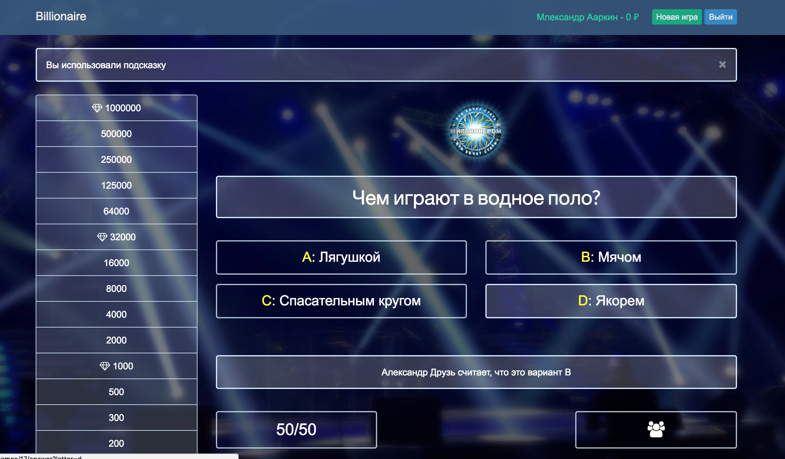

Александр Б. Маркин
Ruby on Rails разработчик
Контактная информация
Телефон: +7 918 595 4422
г. Таганрог, Ростовская обл. 347923.
E-mail: 4nikram@gmail.com
Написать мнеНавыки
- Ruby, Ruby on Rails
- Gems: Device, capistrano, pandit, Carrierwave, rmagic
- TDD, Rspec, Capybara
- Git, Github
- Английский язык Upper-intermediate.
- XML, JSON
- Use case, CRUD(L)
- HTML, CSS, Bootstrap, Skeleton
- Deploy: Heroku, VPS(nginx + passenger + postfix).
Желаемая позиция
Full-stack, Backend, Frontend developer.
- от 50 000 ₽
- 5/2, 8 часов
- Коммандировки
- Переезд
Коротко о себе
- Мужчина 29 лет
- Женат
- Высокая мотивация
- Ответственность
- Обучаемость
- Общительность
- Работа на результат
- Энергичность
- Трудолюбие
- Жизненные приоритеты - семья, работа, хобби.
Профессиональные принципы
В работе и в жизни я за простоту, красоту и порядок. Мои принципы делать работу качественно и в срок. Я считаю что соблюдение код стайла и применение лучших практик для решения задач - это норма. Мой код понятен мне и другим. Я думаю что эфективная коммуникация (в том числе через код) залог успеха и взаимопонимания в коллективе.
Опыт разработки
Я начинающий Ruby on Rails разработчик. На протяжении 2 лет я интересовался веб-разработкой и проходил различные мини-курсы на Code academy, Coursera по программированию и Computer Science в целом. Принимал участие в местном Games Jam (Хакатон) в комманде новичков, в качестве разработчика на Lua + Love2D.
Я закончил 5-месячный интенсив-курс по разработке на Ruby on Rails. Работал на Ruby (2.4.1-2.5.1). Написал ряд программ, среди которых Висилица (консольный вариант сторой игры с псевдографикой), Менделеев (справочник по элементам периодической таблицы), Гардероб (подбор одежды под заданную температуру).
В рамках курса я разработал 3 Rails приложения. Работал с базами данных SQLite3 и PostgreSQL. Освоил методы тестирования моделей, вьюх и контроллеров, познакомился с концепцией TDD. Задеплоил приложения на хостинг Heroku и на свою VPS ноду. Решил задачи отправки почты, интернационализации проекта, загрузки фотографий, разграничения доступа к ресурсам, защита базы данных от взломов и инъекций, тестирования работоспособности, деплоя приложения. Особое внимание уделено культуре программирования, код стайлу, отладки приложения, работы с логами и исправлением ошибок.
Проекты
Приложение Askme
![[скрин приложения]](data/ask.png)
Приложение - соц. сеть для задавания-отвечания на вопросы (аналог сервиса ask.fm). В приложении реализованна регистрация и аутентификация пользователя (без сторонних библиотек), индивидуальная настройка внешнего вида (аватарка, цвет фон профиля), интернационализация. Приложения написано с использоватением Bootstrap 3. Встроена Invisible Captcha защита от спама. Деплой приложения выполнен на сервис Heroku.
Приложение BBQ
![[скрин приложения]](data/bbq.png)
Приложение для организации встреч. В приложении реализована работа с пользователями (gem devise), загрузка (gem carrierwave) и обработка (gem rmagick) фотографий. Так же реализованно хранение загруженного материала в облачном хранилище на AWS S3. Реализована отправка почты через приложение, с использованием ActionMailer, Sendgrid(Heroku), Postfix(VPS). Для деплоя приложения был приобретен VPS, доменное имя и настроены DNS связи для доступа по URL. Была настроена ОС ubuntu server 16.04, установлен rbenv, ruby, rails. Установлен и настроен Postgres, nginx, passenger, postfix. Был выполнен деплой на VPS ноду в ручную и при помощи gem'а capistrano. В настоящее время приложение доступно по адресу mymeet.website и на Heroku
Приожение "Кто хочет стать миллионером"
Игра - ремейк популярной в прошлом игры "Кто хочет стать миллионером". В работе над приложением, был подробно изучен метод разработки TDD, а так же best practices в области тестирования компонент приложения. Приложение доступно для ознакомления в репозитории Github.
Опыт Работы
Я работаю на заводе по производству Стальных Соединительных деталей трубопроводов. Являюсь со-автором патента на изобретение "Способ горячей штамповки крупногабаритных толстостенных нефте-газо-тепло-водопроводных стальных тройников ..." Патент №2492951 .
Завод изготавливает и поставляет продукцию для транспортировки газа и нефти. Продукция поставляется на транспортные магистрали (трубопроводы), компрессорные станции, а так же на склады для покрытия ремонтных запасов.
В должности технолога я разрабатывал конструкторскую документацию (чертежи), технологические инструкции. Обеспечивал участок плазменной резки программами для автоматизированного станка. Рассчитывал и готовил чертежи на штамповую оснастку. Вел технологическую статистику и следил за технологической дисциплиной.
В должности главного технолога наладил серийный выпуск новой номенклатуры деталей трубопроводов. Разработал 2 Технических Условия, согласовал их с отраслевыми институтами и провел типовые испытания. Разработал Технологические процессы на произвоство деталей по Тех условиям. Вел работу с инспекцией и притензионную работу с заказчиками. Разрабатвал Стандарты предприятия по менеджменту качества. Прошел обучение по метрологии, стандартизации и сертификации.
В настоящее время, в должности зам. директора по качеству я руковожу Лабораториями (НК и МИ), Отделом технического контроля, Отделом управления качеством. Занимаюсь разработкой и актуализацией стандартов предприятия. Принимаю аудиты технологии и системы менеджмента. За время моей работы предприятие получило 4 сертификата на соответствие требованиям ISO 9001, СТО Газпром 9001, СДС Интергазсерт - Система качества, СДС Интергазсерт - Деловая Репутация. Предприятие одобрили как производителя и поставщика продукции следующие компании ПАО "Газпром", НК "Роснефть", ПАО "Газпром-нефть, АК "Транснефть".
Об орбазовании
Диплом о полном высшем образовани (инженер системотехник) защитил в 2011 году в Таганрогском Технологическом Институте ЮФУ на радио-техническом факультете по специальности "Промышленная электроника" - 210106. Тема диплома - "Система защиты вещей от пропажи" (Система белоков и меток для крепления к вещам, Bluetooth интерфейс). Система была доведена до стадии моделирования программными средствами.
Во время обущения изучал информатику, сетевые технологии, программирование на языках C, Pascal и Assembler. Программировал микроконтроллеры симейства AVR, программные модели процессоров семейства x86 и ПЛИС.
Места работы
- Октябрь 2012 - по настоящее время
Зам. директора по качеству - - Май 2011 - Октябрь 2012
Гл. Технолог - - Апрель 2010 - Май 2011
Технолог -